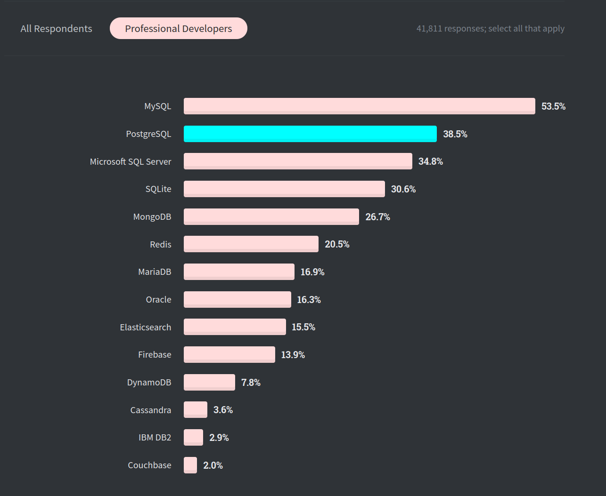
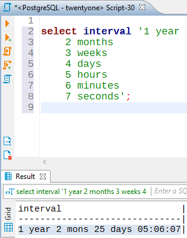
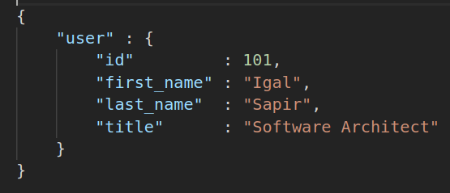

Postgres
The World's Most Advanced
Open Source Relational Database
Open Source Relational Database
Postgres for SQL Server users
As Postgres gains popularity in the DBMS world, it has become a very attractive alternative for Microsoft SQL Server, allowing organizations that make the leap to take advantage of modern features while saving big money on software licensing.
In this talk I will go over the top reasons to choose Postgres over SQL Server and outline a plan for performing such migrations, including:
- Why open source DBMS
- Why Postgres
- Major differences to consider when migrating from SQL Server
- Data type mappings between the two products
- Creating and executing a migration plan
- Migration demo using an open source tool that I published
$ whoami
- Igal Sapir
- System / Software Architect based in L.A.
- 20+ years of B2B & B2C applications
- Used many different DBMSs (SQL Server since 7.0)
- Open Source Advocate, Committer
- I help organizations worldwide with
- Performance, Scalability, and Security
- Save $$ by adopting FOSS and improving efficiency
- Ad-hoc Development
- Consultation
What is Postgres?
- ACID Compliant DBMS
- Cross Platform (Linux, Windows, BSD)
- Free and Open Source
- Highly Compliant to Standards
- Relational with NoSQL Capabilities
- OLTP
- OLAP
- Extensible
What's in a Name? *
Postgres
or
PostgreSQL
PG (as prefix)
not
PostGres
PostGre
PostgresSQL
* One of the very few things of which the community can not reach an agreement
Why Open Source?
- The source code is the single source of truth!
- Anyone can read the code
- Ironically, makes it more secured
- Anyone can fix bugs
- Anyone can add features
- Possibly as an extension
- Better professional service!
- There is competition
- Sponsorship of product development
- Developers are loyal to the product
- Not a company
Are Open Source DBMSs Ready?
Open source database management systems are gaining in scalability, stability, maturity and adoption by third-party software vendors increasing the potential use in production environments.
Gartner, January 2008 (ID G00154215)
Open-source relational DBMSs have matured significantly and can be used to replace commercial RDBMSs at a considerable TCO saving. Information leaders, DBAs and application development management can now consider them as a standard choice for deploying applications.
Gartner, April 2015 (ID G00273643)
Commercial vs. Open Source DBMSs
 Source: https://db-engines.com/en/ranking_osvsc
Source: https://db-engines.com/en/ranking_osvsc
Why Postgres?
- Reliable
- Scalable
- Performant
- Mature
- Well documented
- Excellent (free!) community support
- Professional support from many different vendors
- Not governed by any single organization
- Specialized Data and Index Types
- Popular (and Trendy!)
Trends in Top RDBMSs
 Source: https://db-engines.com/en/ranking_trend/relational+dbms
Source: https://db-engines.com/en/ranking_trend/relational+dbms
StackOverflow.com surveys of ~100,000 developers show that Postgres has
become more popular than Microsoft SQL Server

Postgres is the most Loved and Wanted RDBMS
(after Redis and MongoDB which are not Relational)


But does it scale?
At Adjust GmbH we have
5 – 10 Petabytes of data in Postgres
- Chris Travers, adjust.com, June 2019
Who uses Postgres?
We only know about the ones who publicize it
Who uses Postgres?
And the ones featured in case studies
MasterCard
Clear Capital
AT&T
HP
Sony
Skype
US Army
US Air Force
Vonage
GAP
BMW
UN
Bloomberg
Nokia
Goldman Sachs
A little bit of History
- Stemmed from the INGRES project (UC Berkeley, 1974)
- The first working Relational Database System
- by Dr. Michael Stonebraker and Dr. Eugene Wong
- Also spawned Sybase and... Microsoft SQL Server
- Post-Ingres project c. 1985
- POSTQUEL Query Language
- Released as Postgres95 in 1995
- Berkeley grad students Andrew Yu and Jolly Chen
- POSTQUEL replaced with SQL
- Liberal license attracted more developers
- Renamed to PostgreSQL in 1996 (or was it?)
- Hundreds (thousands?) of contributors
- Notable committers like Tom Lane and Bruce Momjian

Michael Stonebraker
Tom Lane
Bruce Momjian
Release Cycle
- Once a Year (usually in Sep/Oct) for a Major Version
- Lots of new features!
- At least 5 years support
- Data files are not backward compatible
- Two part major versions until 9.6, e.g. 9.4, 9.5, 9.6
- One part major versions since 10, e.g. 10, 11, 12, 13
- Usually a few Minor Updates throughout the year
- No new features
- Bug fixes
- Security patches (rare)
- Data files are backward compatible (rare exceptions)
Top Features Overview
- MVCC with 3 transaction isolation levels
- Read Committed
- Repeatable Read
- Serializable
- Both Relational and NoSQL features
- Replication and HA solutions
Top Features Overview
- Extensible! Notable forks and ad-hoc products
- PostGIS (spatial data for Geographic Information Systems)
- TimeScale DB (time series data)
- GreenPlum DB (big data analytics and BI)
- Citus DB (distributed for horizontal scaling)
- Toro DB (more NoSQL features and MongoDB integration)
Notable Operators
$$- Dollar Quoting-
select $$ This string can have "quotes" and apostrophe's and will only terminate when another set of two dollar signs are encountered $$ as input; ||- String concatenation-
select 'Hello' || ' ' || 'SQL Saturday'; ::- Cast-
select current_timestamp::text; ~, ~*, !~, !~*- REGEX pattern match-
select 'String with 3 digit number 891 in it' ~ '\D\d{3}\D';
Data Types
- Numeric
- smallint, int, bigint
- decimal, numeric, real, double precision
- money
- smallserial, serial, bigserial
- Character
- varchar
- char
- text
Data Types
- Binary
- bytea
- Date/Time
- timestamp
- timestamptz
- date
- time
- interval

Data Types
- Boolean
- true | false
- Enum
- create type rating as enum ('hate', 'dislike', 'meh', 'like', 'love');
- provides type safety, CaSe sensitive
- maintains order for sort and comparisons, e.g. rating > 'meh'
- Geometric
- point, line, box, path, polygon, circle
- UUID
- XML
Data Types
- Full Text Search
- tsvector
- tsquery
- Use the @@ operator
select to_tsvector('The quick brown fox jumps over the lazy dog');
> 'brown':3 'dog':9 'fox':4 'jump':5 'lazi':8 'quick':2
select to_tsquery('Foxes & Jumped');
> 'fox' & 'jump'
e.g. if some_tsvector is created from the text 'The quick brown Fox jumps over the lazy Dog':
select some_tsvector @@ to_tsquery('foxes & dogs')
> true
select some_tsvector @@ to_tsquery('foxes & cats')
> false
Data Types
- JSON
- Stored as original input text
- Order preserved
- Duplicate keys kept
- JSONB
- Parsed and stored as binary
- Order is lost
- Duplicate keys removed
- Provides NoSQL capabilities
- Indexable!

e.g.
select * from some_tbl where some_jsonb_col->user->>last_name = 'Sapir';
Data Types
- Array
- Keep a searchable list of elements, e.g. Tags
- Can be multi-dimensional, e.g. grid, cube, etc.
- Range
- Numeric
- Timestamp
- Date
- Network Address
- cidr, inet, macaddr
- Bit String
- bit, bit varying
Index Types
- B-Tree
- Most popular
- Hash
- Useful for exact matches
- BRIN - Block Range Index
- Useful in huge tables
- GIN -Generalized Inverted Index
- Great for many duplicate keys, e.g. Full Text
- GiST - Generalized Search Tree
- Great for geographical and range types
- SP-GiST - Space Partitioned GiST
- Great for many duplicate prefixes
Indexing Strategies
- Use the right tool for the job
- The WHERE clause must match the indexes
- Expression indexing
- Partial indexing
create index ix_name on some_table using gin(some_column);
create index ix_email on users(lower(email));
...
select * from users where lower(email) = 'user@domain.org';
create index ix_invoice_id on invoices(id)
where is_open = true;
...
select * from invoices where is_open = true and ...;
Notable Extensions
- Foreign Data Wrappers
- connect to other data sources, e.g. SQL Server
- pl/V8 JavaScript engine
- pg_trgm (fuzzy searching)
- pg_cron (scheduling)
- tablefunc (pivot tables with crosstab)
- many more on PGXN*
Procedural Languages
Write UDFs and Procs in the language that your team knows best:
| Built in | Available extensions |
|---|---|
|
|
"Standard" Features
- Schemas
- Tables
- Also Partitioned Tables
- Views
- Also Materialized Views
- Functions
- string_agg()
- generate_series()
- lots of great built in functions
- Stored Procedures
- Triggers
Notable Differences from SQL Server
- String comparisons are CaSe sensitive, e.g.
SELECT *
FROM users U
WHERE U.email = 'ISapir@apache.org';will match 'isapir@apache.org' in SQL Server but not in Postgres
SELECT *
FROM users U
WHERE lower(U.email) = lower('ISapir@apache.org');
CREATE COLLATION case_insensitive(provider=icu, locale='und-u-ks-level2', deterministic=false);
CREATE COLLATION ignore_accents (provider=icu, locale='und-u-ks-level1-kc-true', deterministic=false);
Notable Differences from SQL Server
- String concatenation operator is ||
- Data Types
- Use LIMIT instead of TOP
- pl/pgSQL is not T-SQL
- Can't use variables, e.g. @result
- You can use quotes to maintain case - Don't!
SELECT true AS MixedCaseIdentifiersAreCollapsedToLowerCase;
mixedcaseidentifiersarecollapsedtolowercase| -------------------------------------------| true |
SELECT true AS snake_case_is_more_readable;
snake_case_is_more_readable| ---------------------------| true |
Migration Considerations
- Downtime allowed?
- Minimize it by preparing everything in advance
- Downtime not allowed?
- Do initial migration
- Write to both databases until migration completes
- Switch when ready!
Migration Planning
- Use TDD
- Test Driven Development
- Write queries against source and target databases
- Queries should return the same output for same input
- Adjust formatting as needed for easy comparison
- Ensure test cases FAIL pre-migration
- Ensure test cases PASS post-migration
- Test schemas, data, functions, etc.
The Migrate2Postgres Tool
- Free and Open Source
- Permissive license (GPL3)
- Cross platform
- Scalable
- Extensible
- Easy to use JSON config file
- Will copy the schema objects
- Will copy the data
- You will still have to
- Create indexes, functions, triggers, views, etc.
The Migrate2Postgres Tool
- Read source (SQL Server) schema (customizable)
- Generate DDL script to create target (Postgres) schema objects
- Translates common column defaults
- Allows to rename schemas, tables, and columns
- Optionally convert tables and columns to snake_case
- Copies data using multiple concurrent connections
- Run scripts before data copy
- Run scripts after data copy
- Generates detailed log files
- More features might be added
The Migrate2Postgres Tool
- Requires Java 8 or later
- Supports 3 commands:
- DDL
Generates DDL script; executes if target database is empty
- DML
Copies data from source to target database
- ALL
Runs the DDL command and if executed runs the DML command
- DDL
Demo Time!
I will use Migrate2Postgres to migrate the AdventureWorks sample database to Postgres.
Demo Time!
Let's look at the Migration Project file:
MigrateAdventureWorks.m2pg
MigrateAdventureWorks.m2pg
which extends the template
ms-sql-server.conf
which in turn extends the template
defaults.conf
Demo Time!
-
To demonstrate TDD, I wrote:
- A simple test suite
- Sample test cases